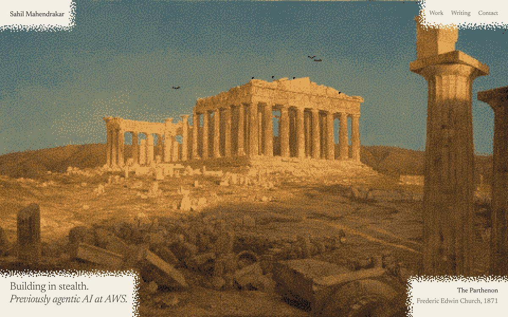
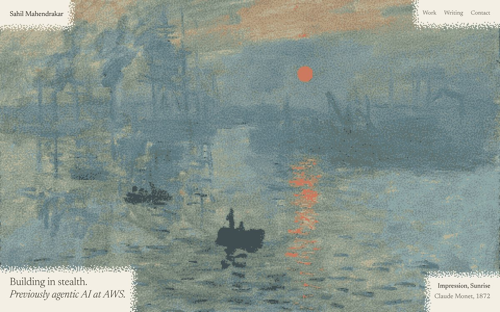
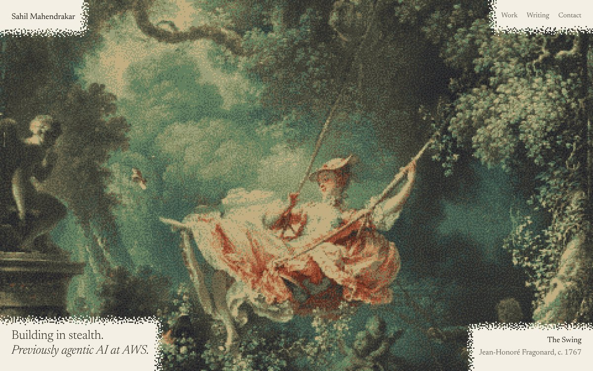
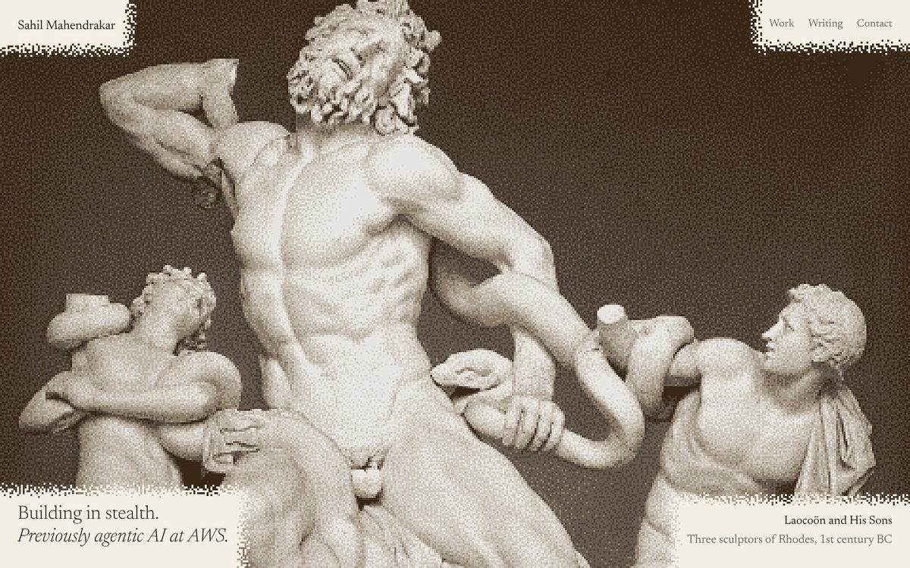
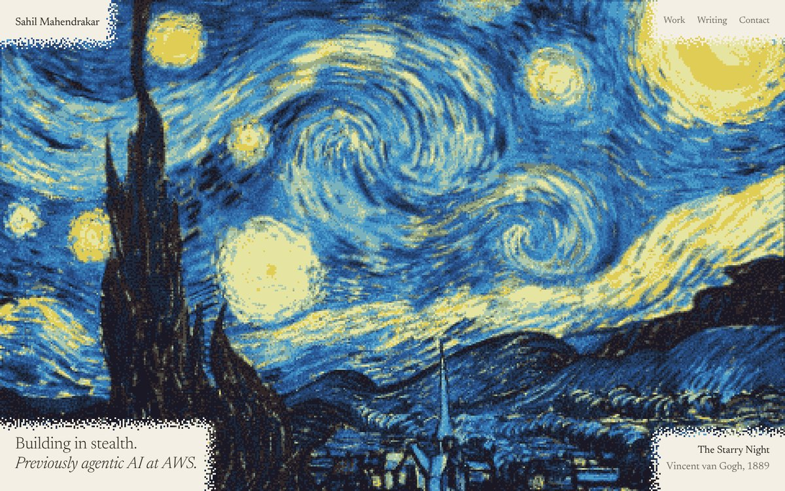

sahilmahendrakar.com · living heroes · round two
Five paintings, quietly alive
One site, five possible heroes. A different one is picked every time the page loads. The motion is meant to go unnoticed at first, and the rest of the site stays plain paper with very little text.
Open the site →

Greek ruins · Church, 1871
Alive A few swallows circle the temple and settle on the cornice. The grass moves a little.
Cursor Birds veer away from it, and perched ones take off if you come close.
Scroll Scroll a little and they all fly off. They come back at the bottom of the page.

Impressionism · Monet, 1872
Alive The harbour shimmers, the three boats bob and drift, smoke wavers, and a gull crosses now and then.
Cursor Moving over the water leaves a faint wake of ripples.
Scroll The sun climbs and the sky warms.

Rococo · Fragonard, c. 1767
Alive She swings, just barely. Light drifts through the canopy and a petal falls now and then.
Cursor Sweeping across her gives the swing a small push. Petals drift out of the cursor's way.
Scroll She swings higher, and the slipper carries on its flight.

Sculpture · Rhodes, 1st century BC
Alive Lamplight flickers on the marble, dust drifts through it, and the coils shift slightly.
Cursor The lamp follows it, so the light rakes across the muscles from wherever you are.
Scroll The room darkens until the lamp is most of the light, and the coils stir a little more.

My pick · van Gogh, 1889
Alive The sky keeps flowing along its own brushstrokes, the stars breathe, and the cypress moves like a flame.
Cursor Moving through the sky stirs a small eddy.
Scroll The sky turns a little faster.
Across all five: the text sits on paper cut out of the painting with dithered edges. Scrolling dissolves the painting into paper for the content, and it comes back at the end for contact links. The link color is taken from whichever painting is showing.
Click the painting credit in the corner to switch paintings. All artworks are public domain.